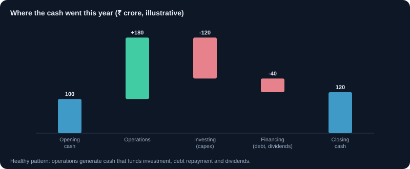
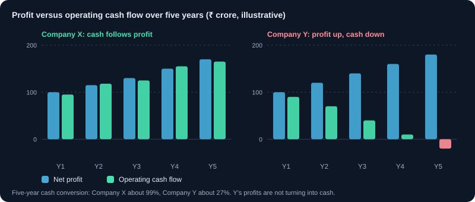

How to Read a Cash Flow Statement
Where a company's real cash comes from and goes, and why cash flow can tell you more than profit.
1. Why cash matters more than profit
A company can report profit and still run out of cash. Profit includes sales not yet paid, costs not yet paid, and accounting estimates. Cash flow shows the money that actually moved. Many investors check the cash flow statement first for this reason.
2. The three sections
- Operating cash flow (OCF): cash from the core business: customers paying, suppliers and salaries paid, taxes paid.
- Investing cash flow: cash spent on assets (capital expenditure) or received from selling them or investments.
- Financing cash flow: cash from borrowing or share issues, and cash paid out as loan repayments, dividends or buybacks.
3. Free cash flow
Free cash flow (FCF) = operating cash flow − capital expenditure. It is the cash left after keeping the business running and growing. Positive, growing free cash flow lets a company pay dividends, repay debt or expand without new borrowing.
Example: OCF ₹400 crore, capex ₹150 crore, so FCF = ₹250 crore.
4. Profit versus operating cash flow
Over several years, operating cash flow should move roughly in line with net profit. If profit is rising but operating cash flow is falling or negative, check receivables and inventory in the balance sheet. This gap is one of the most important warning signs in financial analysis.
5. Capital expenditure: growth or maintenance?
Capex may be to maintain the business or to grow it. A company that spends heavily just to stand still has less free cash for shareholders. Read the management discussion to see which kind of spending it is.
6. Financing and dividends
A company that pays dividends from operating cash is generally healthier than one that borrows to pay them. Frequent new share issues dilute existing owners. Check whether financing inflows are used for growth or to cover operating shortfalls.
7. A worked example
Company X: net profit ₹300 crore, operating cash flow ₹280 crore, capex ₹120 crore, dividends ₹60 crore. FCF = ₹160 crore, enough to cover dividends with room to spare. Company Y: net profit ₹300 crore, operating cash flow −₹20 crore, borrowing ₹100 crore to fund working capital. Y's profit is much weaker quality.
8. Red flags
- Operating cash flow negative for several years while profit is positive.
- Receivables rising faster than sales.
- Repeated new borrowing to fund operations.
- Large one-time inflows from selling assets that hide weak operations.
9. How the statement is built: the indirect method
Most Indian companies use the indirect method under Ind AS 7. The operating section starts from profit before tax and adjusts it to cash. Every adjustment tells you something.
- Add back non-cash costs: depreciation, amortisation, provisions and impairments reduce profit but use no cash in that year.
- Remove non-operating items: interest expense (shown under financing) and income from investments (shown under investing).
- Adjust for working capital: a rise in receivables or inventory uses cash (minus); a rise in payables keeps cash in the business (plus).
- Subtract income tax actually paid, which can differ from the tax shown in the profit statement.
10. A worked cash flow statement
Example Ltd, FY25, ₹ crore. Profit after tax was ₹300 crore.
| Line | ₹ crore |
|---|---|
| Profit before tax | 400 |
| Add: depreciation | 120 |
| Add: interest expense (moved to financing) | 50 |
| Increase in trade receivables | −150 |
| Increase in inventories | −130 |
| Increase in trade payables | +20 |
| Income tax paid | −100 |
| Cash from operating activities | 210 |
| Purchase of property, plant and equipment (capex) | −250 |
| Sale of investments | +30 |
| Cash from investing activities | −220 |
| New borrowings | +250 |
| Interest paid | −50 |
| Dividends paid | −60 |
| Cash from financing activities | +140 |
| Net increase in cash | +130 |
What it shows: operating cash of ₹210 crore is only 70% of the ₹300 crore profit, because ₹280 crore went into receivables and inventory. Free cash flow is 210 − 250 = −₹40 crore, yet the company paid ₹60 crore in dividends. Cash rose by ₹130 crore only because it borrowed ₹250 crore. The headline 'cash increased' hides that the business did not fund itself.
11. Cash flow ratios to track
- Cash conversion = operating cash flow ÷ profit after tax. Over five years, 80% to 100% or more is healthy; persistently below 70% needs an explanation.
- Free cash flow = operating cash flow − capex. Add up five years: a business that never produces free cash depends on lenders or new shareholders.
- Capex ÷ depreciation: well above 1 means the company is expanding; close to 1 means it is mostly replacing worn-out assets.
- Free cash flow yield = free cash flow ÷ market capitalisation. A rough cash return on the price you pay for the whole company.
Example: over five years a company reports total profit of ₹1,500 crore and total operating cash flow of ₹1,350 crore, so cash conversion is 90%. With total capex of ₹900 crore, five-year free cash flow is ₹450 crore.
12. Life-cycle signatures
The signs (+ or −) of the three sections often reveal what stage a business is in. Use them as a first clue, then read the detail.
| Stage | Operating | Investing | Financing | What it usually means |
|---|---|---|---|---|
| Start-up | − | − | + | Losses and investment funded by new equity or loans |
| Growth | + | − | + | Profitable, but expansion needs more capital than the business makes |
| Mature | + | − | − | Business funds its own capex and returns cash through dividends and debt repayment |
| Stress | − | + | + or − | Selling assets or borrowing to cover operating losses |
13. Industry differences
- Banks and NBFCs: lending is their operating activity, so operating cash flow is often negative when loans grow fast. Do not read it like a manufacturer's.
- Capital-heavy growth companies (power, telecom, new factories) can show negative free cash flow for years while building; check whether returns follow once projects start.
- Cyclical businesses (metals, cement, chemicals) swing between large and small cash flows; average them over a full cycle.
- Asset-light businesses (IT services, consumer brands) should convert most profit into free cash flow.
Charts and visuals


Worked examples
Free cash flow per share
Operating cash flow ₹500 crore, capex ₹200 crore, so free cash flow is ₹300 crore. With 20 crore shares, that is ₹15 per share. A dividend of ₹6 per share uses 40% of free cash flow, leaving room to repay debt or invest.
Cash conversion over five years
Company P: five-year profit ₹1,000 crore, operating cash ₹1,050 crore (105%). Company Q: five-year profit ₹1,000 crore, operating cash ₹450 crore (45%). Q's profits are much harder to trust: more than half never turned into cash.
Real-life scenarios
Record profit, empty cash box
A company reports its best-ever profit, but operating cash flow is negative because receivables doubled after it offered customers longer credit to boost sales. Two quarters later it raises short-term loans to pay suppliers. The cash flow statement showed the risk before the debt did.
A heavy investment year
A cement company's free cash flow turns negative in a year when it builds a new plant (capex ₹1,200 crore against operating cash of ₹700 crore). This is acceptable if operating cash flow is steady and debt stays manageable. Check the next two years to see whether the new capacity adds cash.
Use cases
- Checking the quality of reported profit by comparing it with operating cash flow over five years.
- Judging whether dividends and buybacks are paid from free cash flow or from borrowing.
- Separating maintenance capex from growth capex using management commentary and capex ÷ depreciation.
- Spotting companies that repeatedly raise money because their operations do not produce cash.
Key takeaways
- Operating cash flow should track profit over several years; a widening gap is a major warning sign.
- Free cash flow, not profit, pays dividends, repays debt and funds growth without new money.
- Read the working-capital lines: rising receivables and inventory consume cash.
- A higher cash balance can come from borrowing; look at where the cash came from.
- Banks, capital-heavy and cyclical businesses need their own yardsticks.
Key terms, explained
- Cash flow statement
- A record of the actual cash coming in and going out, from operations, investing and financing.
- Free cash flow
- Operating cash flow minus capital expenditure. The cash left after keeping the business running and growing.
- Capital expenditure (capex)
- Money spent on long-lived assets such as factories, machinery or technology.
- Cash flow from operations
- Cash generated by the core business: cash received from customers minus cash paid for running costs and taxes.
- Dividend
- A share of profit a company pays to its shareholders, usually per share.
Questions learners ask
Why is a bank's operating cash flow often negative?
For a bank, giving loans is an operating activity, so rapid loan growth shows up as cash going out of operations, funded by deposits. Judge banks on asset quality, capital adequacy and deposit growth instead.
Is negative free cash flow always bad?
No. A company building capacity can have negative free cash flow for a year or two. It becomes a concern when it lasts for many years, when operating cash flow itself is weak, or when debt keeps rising without returns.
Where is interest paid shown?
Most non-financial companies show interest paid under financing activities, which Ind AS 7 allows. Some show it under operating activities. Check the company's policy note before comparing two companies.
How many years should I look at?
At least five. Single years are distorted by large orders, capex projects or working-capital swings. Totals over five years show the real pattern.
Educational content only, not investment advice. Markets carry risk, including loss of capital. Examples are simplified and may exclude charges, taxes and slippage.